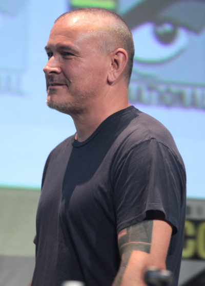

Film - Deadpool

Le réalisateur - Tim Miller
Biographie
Thimothy "Tim" Miller est un réalisateur américain et un artiste en effets visuels. Il a fait ses débuts avec la réalisation de films Deadpool (2016). Il a été nominé pour l'Oscar du meilleur court métrage d'animation en tant que co-scénariste et producteur exécutif du court métrage Gopher Broke, un film d'animation (2004). Miller a également conçu les séquences d'ouverture de The Girl With The Dragon tattoo et Thor: The Dark World.
En Mars 1995, Miller a co-fondé, avec David Stinnett et Cat Chapman, Blur Studio, une société d'animation, d'effets visuels et de conception cinématographique. Miller et Jeff Fowler ont été nominés pour l'Oscar du meilleur court métrage d'animation en 2005 pour le court métrage Gopher Broke.
le 15 Mars 2012, Miller a été contracté par Legendary Pictures pour diriger une adaptation de la séries de bande-dessiné de Warren Ellis Gravel, à partir d'un script d'Oliver Butcher et de Stephen Cornwell. Le 14 Novembre 2012, Sony Pictures contracte Miller pour diriger Saisons, un roman de science-fiction de Joe Haldeman, dont Sebastian Gutierrez a été engagé pour l'adaptation et Michael De Luca pour la production. Miller et Jeff Fowler sont également sous-contractés pour diriger et produire le film d'animation The Goon par leur Blur Studio. En date de l'année 2016, aucun de ces films n'ont encore été produits.
Le 8 Avril 2011, Miller a été embauché par la 20th Century Fox pour diriger le film Deadpool, basé sur le personnage de bande-dessiné du même nom. C'est son premier film, il a été écrit par Rhett Reese et Paul Wernick, avec Ryan Reynolds dans le rôle vedette. Le tournage a débuté fin Mars 2015 à Vancouver, et le film est sortie en salle le 12 Février 2016. C'est à ce jours le seul film qu'il aie réalisé.
Bien qu'il n'aie qu'un film a son actif, il a participer a la production de plusieurs autre film de par sa maison de production. Il a participé aux films: Hideaway (1995), Scott Pilgrim vs. the World (2010), The Girl with the Dragon Tattoo (2011), Thor: The Dark World (2013).
Filmographie
Hideaway (1995)
- Jeff Goldblum
- Christine Lahti
- Alicia Silverstone
- Jeremy Sisto
- Alfred Molina
- Kenneth Welsh
Scott Pilgrim vs. the world (2010)
- Michael Cera
- Mary Elizabeth Winstead
- Jason Schwartzman
- Kieran Culkin
- Aubrey Plaza
- Chris Evans
The Girl With The Dragon Tattoo (2011)
- Daniel Craig
- Rooney Mara
- Robin Wright
- Cristopher Plummer
- Goran Visnjic
- Embeth Davidtz
Thor: The Dark World (2013)
- Chris Hemsworth
- Tom Hiddleston
- Anthony Hopkins
- Natalie Portman
- Idris Elba
- Christopher Eccleston